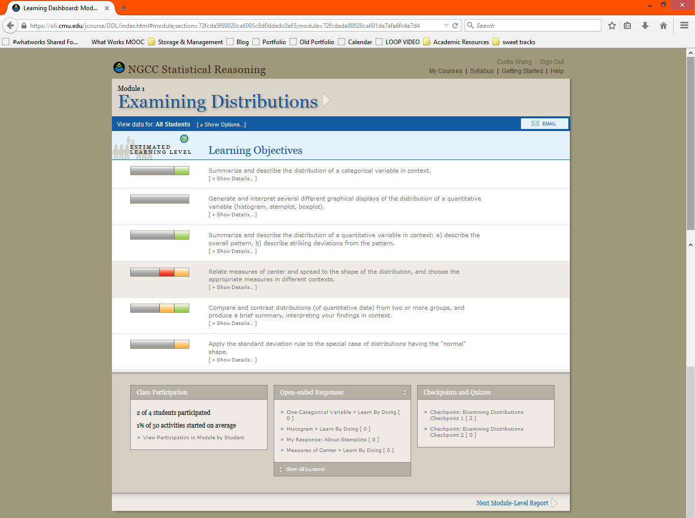
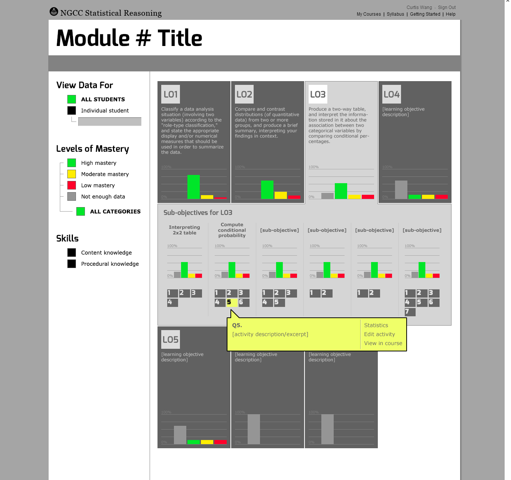
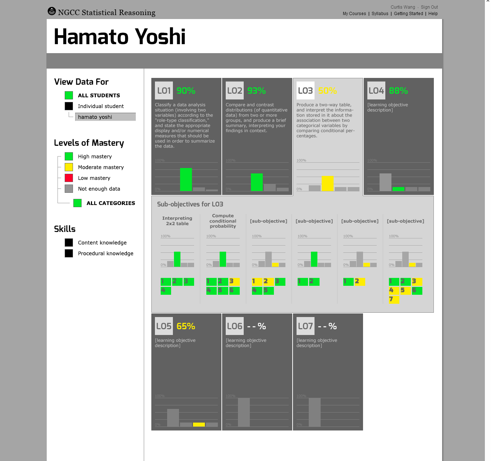
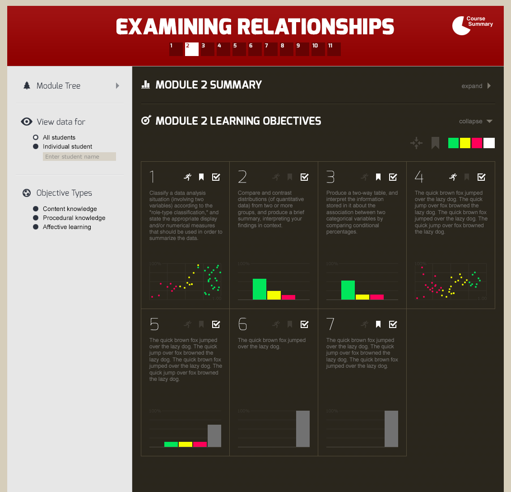
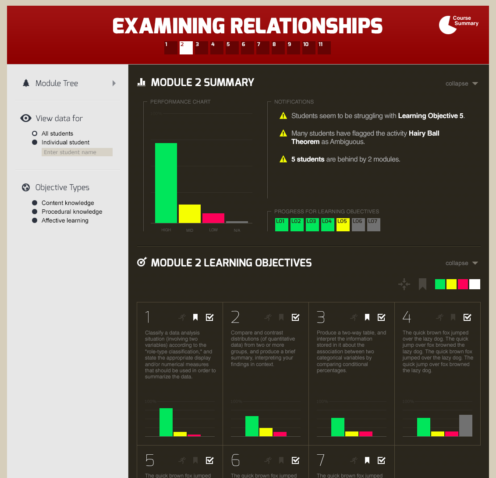
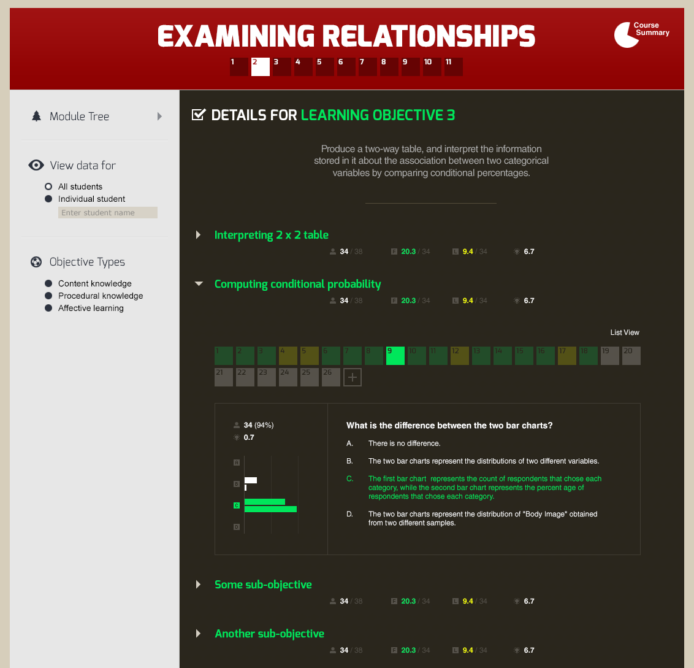

Open Learning Initiative Learner Analytics Dashboard
A predictive learning analytics dashboard for Carnegie Mellon's Open Learning Initiative, translating raw clickstream telemetry into a four-state visual mastery map (Mastered / Somewhat Mastered / Struggling / Insufficient Data). The redesign replaced dense data tables with a progressive-disclosure interface spanning four drill-down levels — from cohort summary to individual question distractor breakdown — giving faculty real-time diagnostic clarity to intervene before misconceptions hardened.
Problem & Learner Context
Faculty in large-scale higher education environments historically taught "blindly". They regularly relied upon retroactive assessments—such as midterms and scheduled finals—to discover where student cohorts were experiencing failure. Instructors lacked direct, real-time visibility into immediate student understanding, preventing them from modifying curriculum or addressing critical misconceptions before they hardened into permanent conceptual blocks. Concurrently, students in high-stakes gatekeeper foundational tracks faced passive, lecture-heavy spaces characterized by completely broken academic feedback loops, driving systemic stagnation, low engagement, and higher historical attrition rates.
The core target users are university and community college faculty members juggling extensive student cohorts across multiple institutional tiers. These educators operate under profound time limitations and heavy cognitive loads. They do not possess the bandwidth to manually extract or manually compile thousands of disparate student application mouse-clicks, trace problem-solving step sequences, or build independent evaluation matrices to diagnose learning states before stepping into their next live lecture session. Leaving this optimization gap unaddressed severely damages institutional efficacy, drives up delivery costs, prolongs time-to-degree completion metrics, and risks systemic student dropouts in foundational STEM and core prerequisites.
My Design Decisions & Rationale
The system architecture prioritized a fluid, web-based predictive learning analytics dashboard interface designed specifically to override static document reporting paradigms. The system systematically converts complex clickstream telemetry into an immediate visual predictive matrix explicitly mapped to targeted learning milestones. Joining the platform engineering cycle after foundational learning science protocols were established shifted the operational scope away from speculative discovery toward targeted design translation. The core design challenge required honoring the strict validation parameters of Dr. Thille's multi-layered cognitive tracking structures and baseline domain expert skill maps, while simultaneously reimagining the visual execution to alleviate intense user decision fatigue.
Evaluating historical design states revealed a problematic reliance on dense, text-heavy data dumps that loaded significant analytical strain onto instructors. To systematically resolve these friction points, the interface text reports were cleared in favor of structured graphical modules. Lower-level system metrics were intentionally sequestered beneath progressive disclosure paths, hiding low-level granular metrics from users until they deliberately clicked to drill down. Furthermore, the data visualization service was streamlined to tightly align with the system's underlying Hidden Markov Model (HMM) output states, transforming disjointed student grades into four clean, predictive mastery state categories: Green (Mastered), Yellow (Somewhat Mastered), Red (Unlearned/Struggling), and Gray (Insufficient Data).

The legacy OLI dashboard — dense text rows, mixed-color progress bars, and bottom-panel link dumps that buried diagnostic signal in analytical noise
Finally, raw user response sets were previously commingled into a single reporting channel, muddying student progress evaluation. The modernization split user outputs by unique assignment configurations, ensuring that instructors could instantly differentiate between safe spaces where students were allowed to make mistakes (with active scaffolding, hints, and "Learn by Doing" items) versus higher-stakes summative assessments ("Checkpoints") that accurately reflected independent mastery.


Redesign wireframes — Learning Objective cards with expandable sub-objective rows for the full cohort (left) and the same layout switching to a named individual student's skill-by-skill mastery breakdown with percentage scores (right)
Project Walkthrough & Highlights
The dashboard layout maps user paths through a responsive framework built on systematic progressive disclosure, taking users smoothly from high-level cohort tracking down to microscopic performance telemetry. Upon initial platform authentication (Level 1: Course Summary), educators encounter a clean, macro-level dashboard summary showing active running modules, collective progression checkmarks, and overall course timeline status across distinct student groups. This high-level structural entry screen cleanly isolates global behavioral trends before loading individual classroom records. Engaging an active module group transitions the user directly into an interactive vertical branch layout (Level 2: The Structured Module Tree). Instructors seamlessly expand nodes to step vertically downwards from Course, to Unit, to Module, to Learning Objective, and finally down to Component Skill. This vertical accordion architecture perfectly mirrors the underlying domain-expert skills mapping spreadsheet, helping educators instantly visualize the curricular lineage connecting atomic tasks to broad core competencies.


Level 2 — Module Learning Objectives grid with color-coded HMM mastery charts per objective (left); Level 1 expanded — Module Summary panel showing the cohort performance distribution and an auto-generated notification feed flagging at-risk students and ambiguous content (right)
Isolating a distinct target objective surfaces an explicit tracking window fueled directly by real-time learner event logs (Level 3: Learning Objective Detail). The primary visual block uses horizontal distribution bars driven by the backend HMM predictive states to reveal the exact absolute volume of students tracking across individual competency phases. Expanding an objective entry surfaces granular sub-skills, allowing an instructor to note if a class-wide roadblock is tied exclusively to a narrow sub-skill like estimating the r-value. High-risk learners requiring immediate intervention and unlogged profiles lacking statistical footprint are instantly isolated. The baseline interface tier connects educators directly to individual question strings (Level 4: Micro Problems Grid & Assessment Audit). Instructors audit selected metrics through an integrated grid layout filtered by exercise type. Selecting an analytical node displays the identical visual challenge, problem prompts, and scatterplots presented to students, rendering an accurate option-by-option distribution breakdown. Instead of basic pass/fail tallies, the layout exposes exactly how many students selected specific distractor variants or fell for common misconceptions, empowering the educator to build targeted corrective strategies ahead of their next live lecture.

Levels 3–4 — Learning Objective detail with sub-objectives expanded; a selected question renders the full prompt with an option-by-option response distribution, exposing exactly which distractor students chose and at what rate
Results & Evidence of Value
A crucial conceptual and analytical leap involved transforming the foundational architecture of the student competency bars. In prior iterations, visual rows scaled to an identical uniform horizontal width regardless of class composition; the color blocks inside the row communicated the strict percentage proportion of a class cohort in that state. The updated dashboard re-architected these anchors so that the bars more clearly reflect absolute numerical count values, making within-cohort volume evaluations immediate and allowing effortless apples-to-apples comparisons across a given class.
This optimization introduced a calculated design trade-off: instructors lost a rigid, consistent sense of how much of a visual bar represented precisely 100% or any given fractional portion of the class. However, evaluating the interface through an instructional lens revealed that this pivot was far more meaningful for active teachers. While a percentage-driven visualization remains highly useful for the backend data analytics team to track macro-population trends across the country, live classroom instructors need to immediately grasp the absolute physical volume of students blocked at a given node to plan immediate logistical resources and class triage.
Reflection & Lessons Learned
To guard against user friction during high-stress instruction prep, the user flow blueprint focused directly on speed, navigation clarity, and rapid view adjustment. Designers built clean navigation pathways to let instructors segment and isolate distinct learner sub-cohorts, mastery subtypes, or high-risk student clusters with minimal clicks. Moving between alternate learning targets or shifting from high-level outcome summaries down to discrete exercise inputs registers as a fluid pivot.
Eradicating data-loading lags and complex menu pathways allowed the interface to successfully map to user behaviors, enabling educators to filter and parse statistical insights exactly as fast as their internal desire to compare data variables arises. Ultimately, the project highlighted the profound importance of designing user experiences that don't just dump raw analytics data onto users, but actively translate advanced statistical predictive frameworks into fluid, responsive classroom diagnostic tools.